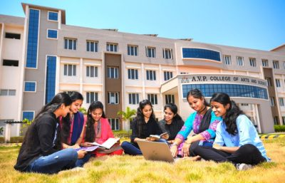

College Profile
The college is situated at blossoming green environment and the campus is free from pollution. It has splendid infrastructure with modernized furniture which complements vibrant academic domain. It renders an effective curriculum which unveils the standards and core competencies of the students like analytical abilities, creative thinking and problem solving skills of the students. The college strives to create a suitable arena for all round developments which enable the students to serve the country with great vigor and enthusiasm and also to face challenges. Our College has the magnanimous management for achieving perfection in terms of providing all required facilities and resources in the higher education arena.. The highly qualified and experienced faculty members are committed to serve the students community to enrich the knowledge of the students. At present, the college offers 14 UG Courses and 3 PG Courses with the staunch motive of developing research skills. Co-curricular and extra-curricular activities are conducted in the college at regular intervals and the students are given opportunities to empower themselves and engage in socially useful and productive works through various Cells and Clubs like NSS, Rotaract, Social Awareness Cell, and Women Empowerment Cell and so on.